Material didáctico: Engranaje cónico
Nos disponemos a crear un engranaje de ruedas dentadas cónicas.
Activamos la extensión Extra Objects.
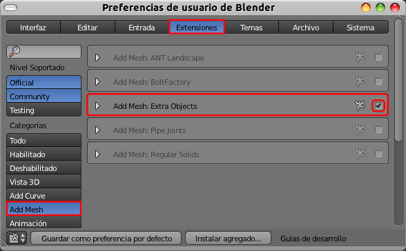Con el menú Añadir/Malla/Extra Objects/Gears/Gear sacamos a escena una rueda dentada. Antes de tocar nada en el editor Vista 3D nos vamos a sus opciones en el cuadro Herramientas ("T") y escogemos un valor Conical angle: 45.00.
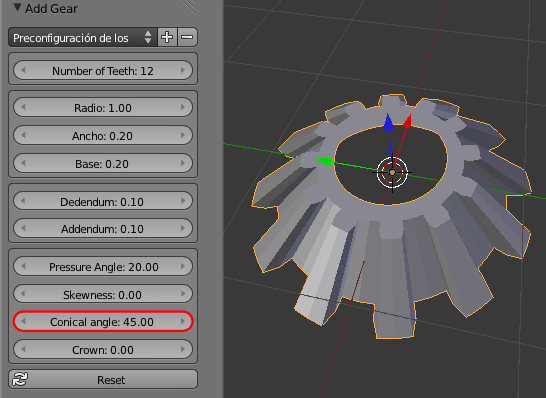No necesitamos más ediciones en esta rueda, así que la duplicamos ("Shift_D") y el nuevo objeto lo colocamos en cualquier sitio.
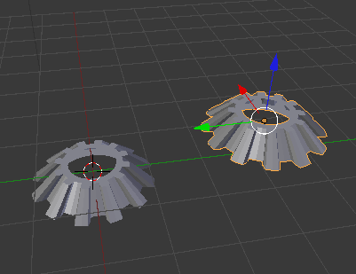En el cuadro Propiedades ("N") hacemos las siguientes transformaciones:
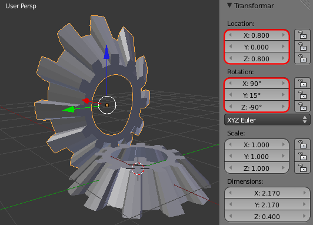- Localización: X=0.800, Y=0.000, Z=0.800
- Rotación: X=90º, Y=15º, Z=-90º (negativo)
Una buena costumbre...
En la rotación que acabamos de hacer han dejado de coincidir los ejes Locales y los Globales. Si podemos afirmar que eso no origina nada más que problemas en un proceso de diseño 3D, en el caso particular de la animación es seguro que nos conducirá al desastre más pronto que tarde.
Por lo tanto, no perdemos ni un segundo en hacerle a esa rueda la edición Objeto/Aplicar/Rotación. Así los ejes Locales y los Globales se igualan y todo será mucho más fácil.
Es el momento de pasar al entorno de trabajo Animation.
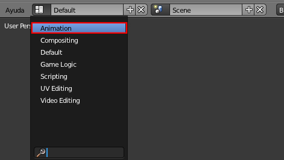A la rueda a la que le hemos hecho los últimos cambios, ya que está seleccionada, le añadimos un keyframe del tipo Rotación en el fotograma 1 (Tecla "I" o Objeto/Animación/insertar cuadro clave/Rotación).
Nos desplazamos algunos fotogramas (unos 50) y en el editor Vista 3D rotamos ligeramente la rueda en el eje X ("RX"); después creamos el nuevo keyframe de Rotación. Tenemos esto:
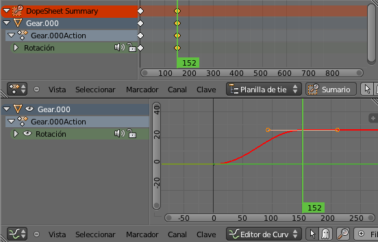Aunque para nuestros fines no es imprescindible hacer la siguiente edición vamos a realizarla para aclarar algunos conceptos importantes.
La rueda no gira a velocidad constante por culpa del tipo de curva (bezier) con la que se crea automáticamente la interpolación.
- Seleccionamos los dos nodos de la curva y que representan a los keyframes.
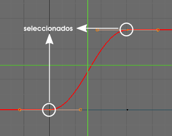
- En el menú de este editor hacemos Clave/Modo de interpolación/Lineal.
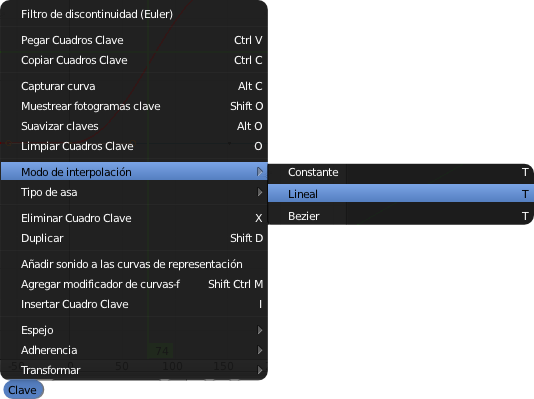
Con esto se convierte, lo que era una curva de velocidades no constantes, en una interpolación recta en la que la velocidad es fija e invariable en todos los puntos.
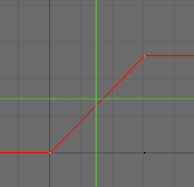La rotación constante
Sin embargo a nosotros lo que nos viene bien es, no sólo que la velocidad sea constante, sino que esa rotación no tenga fin. Para eso mantenemos seleccionados los dos nodos y usamos el menú, de este mismo editor, Canal/Modo de extrapolación/Extrapolación Lineal.
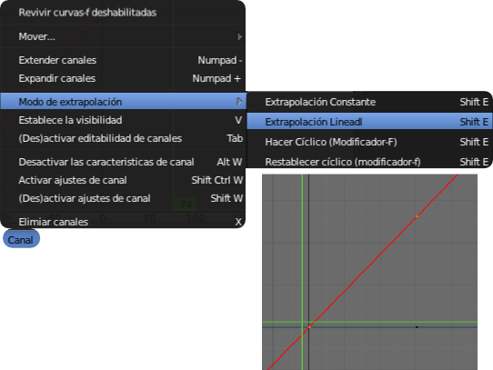Lo único que nos queda ahora es determinar tanto el sentido de la rotación como la velocidad. Basta con seleccionar el nodo de la derecha y desplazarlo ("G"). A continuación mostramos dos posiciones y sus consecuencias.
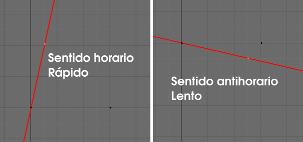Nos quedamos con la primera de las dos opciones.
En nuestra manipulación del nodo aquí y allá es casi seguro que ha dejado de coincidir con el fotograma original y se ha creado uno nuevo.
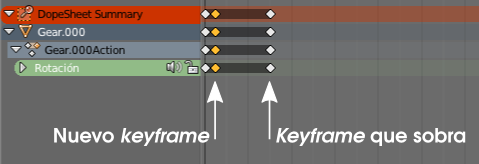El viejo keyframe es mejor eliminarlo ("Supr") ahora para evitar problemas en la siguiente edición.
Nosotros queremos que la velocidad de rotación de la otra rueda sea la misma, así que vamos a copiar los datos de la animación. En el editor Vista 3D seleccionamos primero la rueda que aún no tiene animación y después la que sí la tiene y hacemos Objeto/Crear vínculos/Datos de animación. Con esto se copian los datos del objeto dominante (el último en ser seleccionado) al otro.
La animación resulta un desastre porque el eje de rotación de la segunda rueda es X...
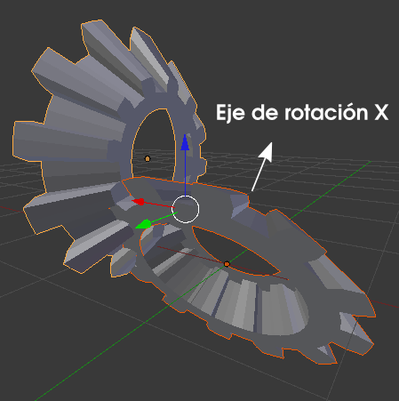...cuando debe rotar en Z.
¿Qué podemos hacer?. Decirle a Blender que los datos que tiene guardados para Rotación X los elimine, pero no sin antes hacer una copia en Rotación Z.
Monousuario de la animación
Hay que tener cuidado. Si hacemos ediciones en la animación de la segunda rueda, los cambios afectarán a la primera porque las animaciones están vinculadas. Por eso es crucial seleccionar la segunda rueda y hacer en el editor Vista 3D la operación Objeto/Hacer monousuario/Animación de objeto.
Nos aseguramos de tener seleccionada la segunda rueda (la que tiene que rotar en Z) y nos dirigimos al Editor de gráficas y desplegamos la información de Rotación.
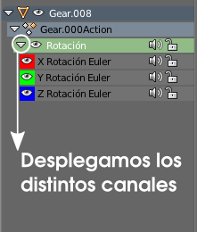Seleccionamos X Rotación Euler, en la gráfica cogemos un nodo y después pulsamos "L" (o Seleccionar/Seleccionar vinculados) para que se seleccionen todos los que pertenecen a ese canal X.
Ahora copiamos la información en el portapapeles. Es posible usar el tradicional "Control_C" o echar mano del icono  que se encuentra al final de la barra de menús del Editor de gráficas .
que se encuentra al final de la barra de menús del Editor de gráficas .
Damos por hecho que estamos en el fotograma 1. De no ser así la información se va a pegar en el sitio inadecuado y se creará un keyframe de más. No pasa nada porque se puede después borrar pero es mejor hacerlo de una sola vez.
Con la información copiada seleccionamos Z Rotación Euler y la pegamos; bien sea con "Control_V" o con el icono que acompaña al que vimos antes.
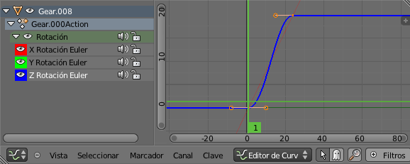En la edición no se ha guardado la extrapolación lineal así que, aprovechando que están los nodos seleccionados, hacemos Canal/Modo de extrapolación/Extrapolación lineal.
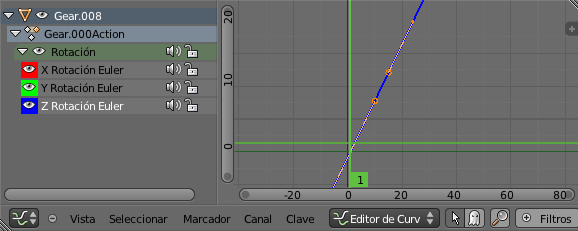El canal azul (Z) no deja ver el rojo (X) así que seleccionamos de nuevo X Rotación Euler y directamente hacemos Canal/Eliminar canal.